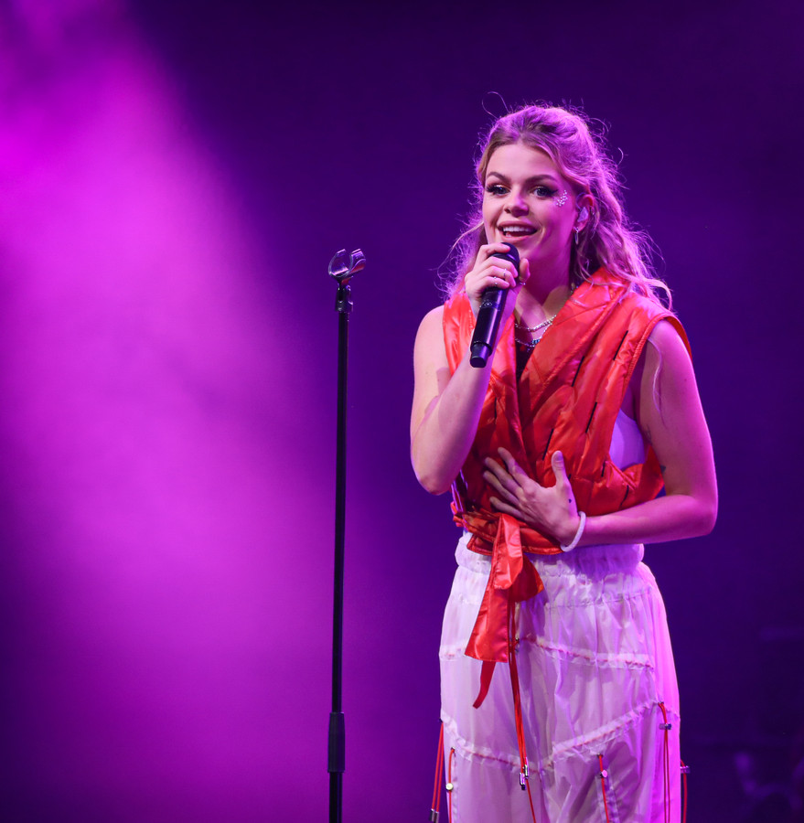

Davina Michelle is een Nederlandse zangeres die bekend staat om haar krachtige stem en emotionele manier van zingen. Ze werd geboren op 12 november 1995 in Rotterdam en was al op jonge leeftijd bezig met muziek. Ze hield altijd al van zingen, maar in het begin was het nog niet duidelijk dat ze daar echt haar carrière van zou maken.
Haar grote doorbraak kwam via YouTube. Ze begon met het uploaden van covers van bekende nummers. Hierdoor konden mensen haar stem ontdekken. Het moment dat alles veranderde was toen ze een cover maakte van het nummer “What About Us” van P!nk. Die video ging viral en werd miljoenen keren bekeken. Zelfs P!nk zelf reageerde erop en zei dat ze onder de indruk was van haar stem. Dit was een belangrijk moment in haar carrière.
Na haar succes op YouTube begon Davina Michelle steeds meer bekendheid te krijgen in Nederland. Ze kreeg de kans om eigen muziek uit te brengen en dat werd meteen een succes. Haar eerste grote hit in Nederland was “Duurt te lang”. Dit nummer stond wekenlang op nummer 1 en werd een van de grootste Nederlandse hits van dat jaar. Vanaf dat moment was haar naam niet meer weg te denken uit de muziekwereld.
Davina staat bekend om haar sterke live optredens. Ze zingt vaak op grote festivals, televisieprogramma’s en concerten. Haar stem is niet alleen krachtig, maar ook emotioneel, waardoor ze mensen echt kan raken met haar muziek. Ze weet hoe ze een publiek moet meenemen in een optreden, of het nu een klein optreden is of een groot festival met duizenden mensen.
Naast zingen schrijft Davina ook veel van haar eigen nummers. Ze haalt inspiratie uit haar eigen leven, gevoelens en ervaringen. Daardoor voelen haar liedjes echt en persoonlijk aan. Ze zingt vaak over liefde, onzekerheid en persoonlijke groei, wat veel luisteraars herkennen.
Vandaag de dag is Davina Michelle een van de bekendste zangeressen van Nederland. Ze blijft groeien als artiest, maakt nieuwe muziek en treedt op in binnen- en buitenland. Haar verhaal laat zien dat je met talent, hard werken en doorzettingsvermogen heel ver kunt komen in de muziekwereld.